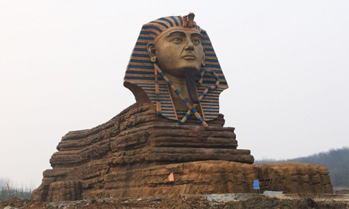

Tourism in Egypt
 Egypt is the home of the ancient Pharaohs. It's not all historic treasures, though. With vast tracts of desert, superb scuba diving, and the famed Nile River, there's something for everyone in Egypt.
Vist this page to see some events in Egypt
Beach lovers head to the Sinai to soak up the sun, while archaeology fans will have a field day in Luxor.
Cairo is the megalopolis that can't be beaten for city slickers, while Siwa oasis and the southern town of Aswan offer a slice of the slow pace of the countryside.
Egypt has so much for travelers to see and do, it's the perfect country for a mix
of activities combining culture, adventure, and relaxation.
For more informtion about Egypt please visit Wikipedia
This website shows you the best places to visit and the top tourist attractions in Egypt.
You can contact us for more informaton Contact us